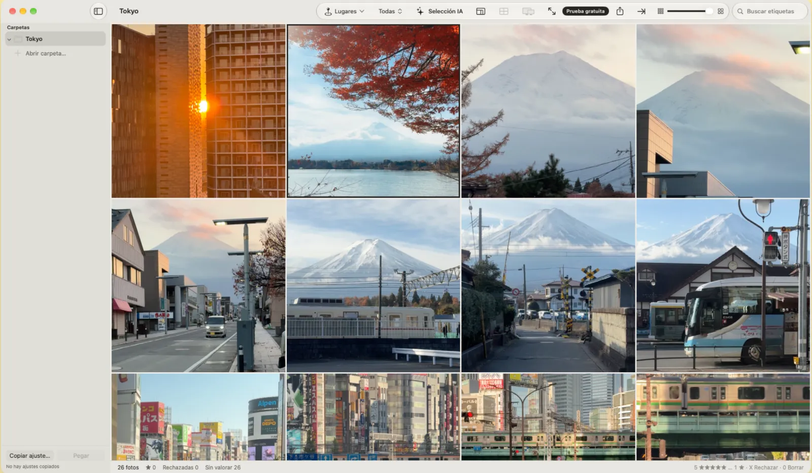
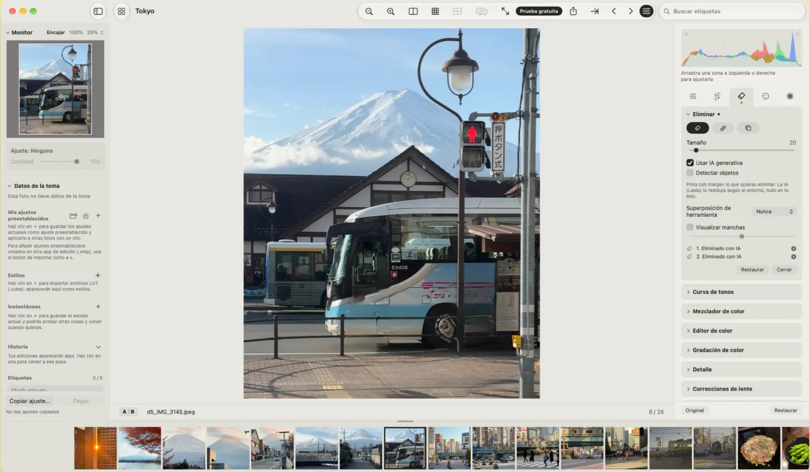

Sin importar. Solo tus carpetas.
Abre una carpeta de una tarjeta SD o un SSD externo y tus fotos aparecen al instante. Sin catálogo ni base de datos: las ediciones se guardan en archivos XMP junto a las fotos y los originales no se tocan.
Abre una carpeta y empieza al momento: mira, selecciona y revela sin importar. Tus fotos nunca salen de tu Mac o PC con Windows, y toda la IA funciona en el propio dispositivo.
Descarga gratuita, con 30 días de prueba gratis de todas las funciones. Requiere macOS 26 o posterior. Windows 10 (64 bits) o posterior.
Si Windows muestra «Windows protegió su PC», haz clic en «Más información» → «Ejecutar de todas formas».

RAW ajustado a tu cámara — Perfiles ajustados para más de 130 cámaras. Exposición, curva de tonos, gradación de color, y lo bastante rápido para miles de fotos.
Abre una carpeta de una tarjeta SD o un SSD externo y tus fotos aparecen al instante. Sin catálogo ni base de datos: las ediciones se guardan en archivos XMP junto a las fotos y los originales no se tocan.

Suaviza la piel e iguala el tono sin perder textura. Da forma a rostro, mandíbula, ojos, nariz y labios con controles, y elimina las imperfecciones de una persona en muchas fotos a la vez.

Selecciona el sujeto, el cielo, el fondo o las personas con un clic y ajusta cada máscara por separado. Suma, resta e interseca para afinar.

Pinta lo que quieras quitar y se rellena para encajar con el entorno. Toda la IA funciona en el dispositivo: tus fotos nunca salen de tu Mac o PC con Windows.

Activa la conexión con IA y Claude o ChatGPT (Codex) maneja Butter Edit por ti: elegir la mejor foto de cada ráfaga, editar una foto según lo que describas, igualar el tono de una foto de referencia, añadir máscaras, recortar y exportar, solo con pedirlo.
Función de la versión comprada directamente (Mac y Windows). Necesitas tu propia cuenta de Claude o ChatGPT. Viene desactivada; mientras esté activada, se envían al servicio de IA conectado pequeñas imágenes de vista previa que la IA revisa.
«Pon 3 estrellas a la mejor foto de cada ráfaga de esta carpeta»
«Dale a esta foto un aspecto de película cálido»
«Iguala el tono de la foto de referencia de mi escritorio»
No hay ningún comando que borre fotos. Los ajustes se pueden deshacer (⌘Z en Mac, Ctrl+Z en Windows).
Butter Edit es un editor de fotos sin importación y sin catálogo. Abre una carpeta de una tarjeta SD o de un SSD externo y tus fotos aparecen al instante: mira, selecciona, revela RAW y edita. Está hecho para moverse rápido entre miles de fotos.
Sin suscripción. Compra una vez y es tuyo.
Ver, seleccionar y editar es siempre gratis.
Haz clic en «Iniciar prueba gratuita de 30 días» para usar todas las funciones durante 30 días. Nunca se te cobra automáticamente.
Tras la prueba solo se bloquea la exportación. Una compra la desbloquea para siempre.
Cómpralo fuera de la App Store y úsalo en Mac y Windows, en hasta 3 ordenadores.
Escríbenos con cualquier pregunta o problema: thefilmtravel@gmail.com
Indica tu ordenador (modelo de Mac y versión de macOS, o versión de Windows), el modelo de cámara y qué ocurrió.
La app se descarga gratis. Haz clic en «Iniciar prueba gratuita de 30 días» para usar todas las funciones durante 30 días. Después, ver, seleccionar y editar siguen funcionando; para exportar hace falta la compra única de desbloqueo. Nunca se te cobra automáticamente.
En un Mac con la misma cuenta de Apple, abre Ajustes → Compra y haz clic en «Restaurar compras».
Tus fotos originales nunca se modifican. Las ediciones se guardan en archivos .xmp junto a las fotos.
En Mac, Butter Edit abre archivos RAW de cámaras compatibles con macOS; en Windows, de cámaras compatibles con su decodificador RAW integrado (LibRaw). Las cámaras nuevas suelen funcionar tras una actualización de macOS o de la app.
Controla desde la app una cámara conectada por USB y recibe las fotos nuevas directamente en tu carpeta. Permite el acceso a la cámara la primera vez que la conectes.